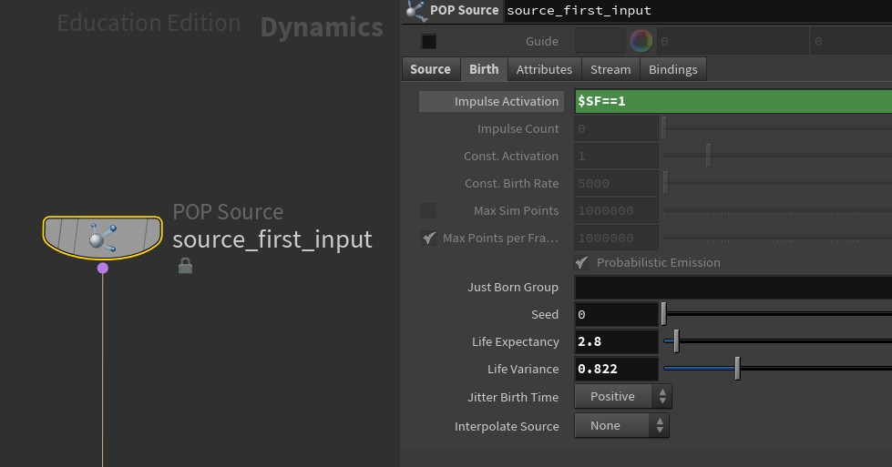
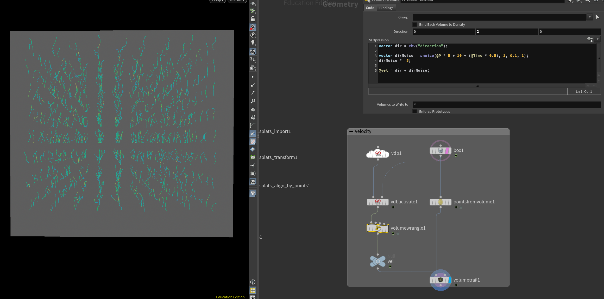
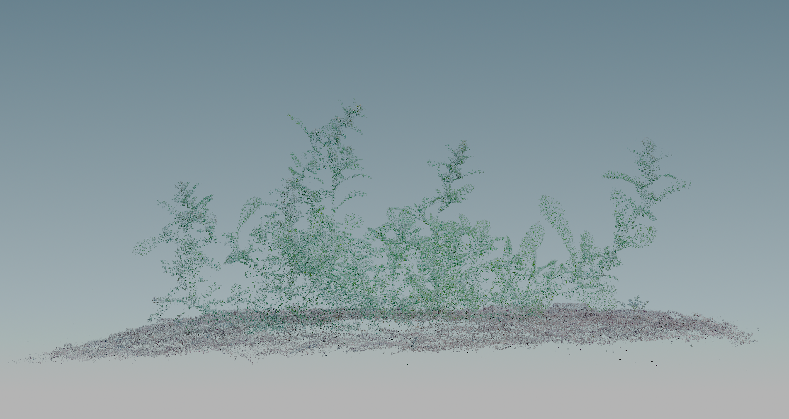
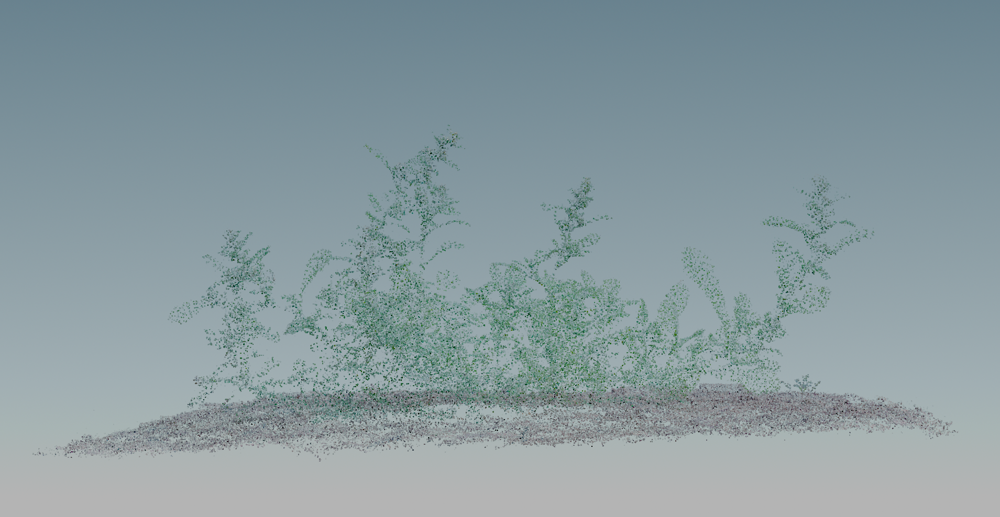

Week 05 - GSplat with Simulation | GSOP | GSplat Deformation
Feb 01 - 08, 2026
GSplat with Simulation
Gaussian Splat with particles simulation in Houdini
Gaussian Splat (view by using GSOP Gaussian Splats Source)
Process

Emit particles only on frame one

Create velocity
Animate the velocity container so the particles will gradually be affected
Gaussian Splat Deformation
Deform a specific area of gaussian splat with VEX in Houdini
Gaussian Splat (view by using GSOP Gaussian Splats Source)
Create a stem proxy and detect area that is above the ground
Remove points under the ground
Use VEX to build deformation controls
GSplat Clean up with GSOP
Utilize GSOP and VDB to clean up gaussian splat in Houdini

Original Points (before cleaning up)

After cleaning up
To-Do Lists
Apply more complex simulation, such as pyro driven simulation to gaussian splats
Create gaussian splat assets: soil, plants etc
Import animated PLY sequence to Unreal Engine
Explore USD and PLY workflow
GSOP Study